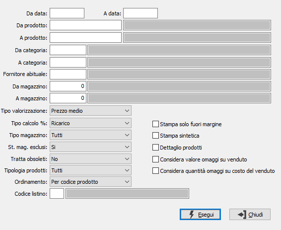

Margine di contribuzione
Il programma produce prospetti di analisi del margine di contribuzione relativi a uno o più parametri di selezione forniti dall’utente.

DA DATA: inserire la data da cui deve iniziare l’analisi dei movimenti di magazzino. Il campo è obbligatorio.
A DATA: inserire la data con cui si desidera terminare l’analisi dei movimenti di magazzino. Il campo è obbligatorio.
DA PRODOTTO: eventuale codice dell'articolo, presente in anagrafica Prodotti, da cui si desidera iniziare la selezione dei movimenti di magazzino. Confermando a vuoto, la selezione inizia con il primo prodotto valido. Sul campo è attiva la ricerca (F9) sull’anagrafica prodotti.
A PRODOTTO: eventuale codice dell'articolo, presente in anagrafica Prodotti, a cui si desidera terminare la selezione dei movimenti di magazzino. Confermando a vuoto, la selezione termina con l’ultimo valido. Sul campo è attiva la ricerca (F9) sull’anagrafica prodotti.
DA CATEGORIA: eventuale codice della categoria merceologica da cui si vuole iniziare la selezione di analisi. Sul campo è attiva la ricerca (F9) sulla tabella Categorie merceologiche.
A CATEGORIA: eventuale codice della categoria merceologica con cui si vuole concludere la selezione di analisi. Sul campo è attiva la ricerca (F9) sulla tabella Categorie merceologiche.
FORNITORE ABITUALE: eventuale codice del fornitore abituale dei prodotti con cui si desidera effettuare la selezione dei prodotti. Sul campo è attiva la ricerca (F9) sull’anagrafica fornitori.
DA MAGAZZINO: eventuale codice del magazzino da cui si vuole iniziare la selezione di analisi. Confermando a vuoto, l’analisi inizia dal primo magazzino valido. Sul campo è attiva la ricerca (F9) sulla tabella Magazzini.
A MAGAZZINO: eventuale codice del magazzino con cui si vuole concludere la selezione di analisi. Confermando a vuoto, l’analisi termina con l’ultimo magazzino valido. Sul campo è attiva la ricerca (F9) sulla tabella Magazzini.
TIPO VALORIZZAZIONE: definisce il metodo di valorizzazione dei movimenti. Valori possibili:
Prezzo medio
Prezzo ultimo carico
Costo di mercato
Prezzo medio di vendita
Prezzo di listino
TIPO CALCOLO %: Definisce come verrà effettuato il calcolo percentuale. I valori disponibili sono:
Margine: la percentuale verrà calcolata rapportando la differenza tra il venduto e l'acquistato con il venduto
Ricarico: la percentuale verrà calcolata rapportando la differenza tra il venduto e l'acquistato con l'acquistato
TIPO MAGAZZINO: combo box per definire la tipologia di magazzino da elaborare. Valori ammessi: tutti, di proprietà, di terzi.
STAMPA MAGAZZINI ESCLUSI: indica se nella selezione si desidera i magazzini normalmente esclusi dalla stampa dell’inventario. Valori ammessi: No, Si, Solo esclusi.
TRATTA OBSOLETI: definisce come se includere nell'analisi anche gli articoli obsoleti: Si, No, Solo obsoleti.
TIPOLOGIA PRODOTTI: combo box per definire la tipologia dei prodotti da elaborare. Valori ammessi: tutti, escluso prodotti fuori inventario, solo prodotti fuori inventario.
ORDINAMENTO: combo box per definire i criteri di ordinamento. Valori ammessi: per prodotto, per Margine, per performance.
LISTINO: codice del listino prezzi da utilizzare per ricercare il prezzo dell'articolo se richiesto. Sul campo sono attive le funzioni di ricerca (F9) sulla tabella listini.
STAMPA SOLO FUORI MARGINE: indica se si desidera stampare solo i prodotti per cui il margine non è compreso nelle percentuali di ricarico minimo e massimo del prodotto (casella con segno di spunta).
STAMPA SINTETICA: definisce il formato del report: sintetico (casella con segno di spunta) oppure analitico (casella vuota).
DETTAGLIO PRODOTTI: definisce se stampare il dettaglio di ogni prodotto (casella con segno di spunta).
CONSIDERA VALORE OMAGGI SU VENDUTO: Se spuntato aggiunge al valore del venduto anche il valore degli omaggi.
CONSIDERA QUANTITÀ OMAGGI SU COSTO DEL VENDUTO: Se spuntato considera nel calcolo del costo del venduto anche il totale delle quantità omaggio.